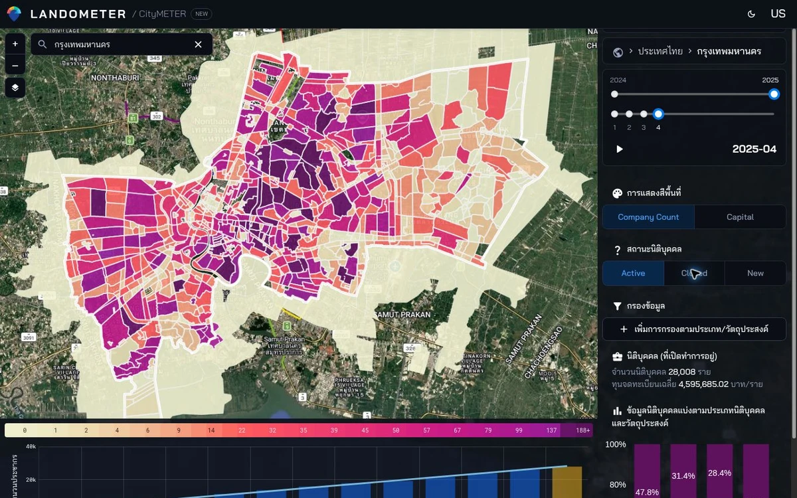

CityMETER · Location
บริษัทจดทะเบียน: สถานะและทุน
รู้จักโครงสร้างธุรกิจในพื้นที่จากประเภทบริษัท สถานะทะเบียน และทุนจดทะเบียน ก่อนศึกษาคู่แข่งหรือคู่ค้า
เปิดข้อมูลบนแผนที่ ↗
เห็นกลุ่มธุรกิจก่อนเลือกเจาะรายบริษัท
เมื่อบริษัทต่าง ๆ อยู่บนแผนที่เดียวกัน จะเห็นประเภทธุรกิจที่กระจุกตัวและพื้นที่ที่ควรลงสำรวจ ใช้ทุนจดทะเบียนประกอบการอ่านโครงสร้างทะเบียน แล้วตรวจการดำเนินงานจริงของบริษัทที่สนใจต่อ
สถานะทะเบียนไม่เท่ากับการเปิดกิจการจริง และทุนจดทะเบียนไม่ใช่รายได้ เงินลงทุน หรือจำนวนงาน
ลองเริ่มจากสองคำถามนี้
- ธุรกิจประเภทใดกระจุกตัวในพื้นที่นี้?
- มีบริษัทไหนควรศึกษาเป็นคู่แข่งหรือคู่ค้า?
ดูพื้นที่ที่คุณสนใจต่อ
เลือกกลุ่มธุรกิจแล้วตรวจรายบริษัทกับข้อมูลการดำเนินงานปัจจุบัน
อ่านต่อจากต้นทาง
แหล่งอ้างอิง ช่วงเวลา และขอบเขตข้อมูล
แหล่งอ้างอิงที่ตรวจเทียบแล้ว
- ผู้เผยแพร่ข้อมูล
- กรมพัฒนาธุรกิจการค้า
- ที่มา
- ใช้ทะเบียนนิติบุคคลและเหตุการณ์ตั้งใหม่/เลิกกิจการ โดย CityMETER เป็น subset ที่คัดเลือกและเพิ่มพิกัด
- ช่วงเวลาของข้อมูล
- CityMETER snapshot 2024-04 ถึง 2025-04; ต้องตรวจชื่อ resource ไม่อนุมานชนิดเหตุการณ์จาก package ID อย่างเดียว
- พื้นที่ครอบคลุม
- มีหน้าสรุประดับประเทศไทย แต่ขอบเขตข้อมูลต้นทางยังไม่ระบุ
- ระดับรายละเอียด
- นิติบุคคลตามสถานะทะเบียน ประเภทธุรกิจ และช่วงข้อมูลที่เลือก
เมื่อจะนำข้อมูลไปเปรียบเทียบหรืออ้างอิง
ไม่ใช่ Business Dynamics และยังไม่ควรสรุปว่าเป็นนิติบุคคลทั้งหมดในประเทศ

สแกนเพื่อเปิดข้อมูลนี้ใน CityMETERเปิดข้อมูลบนแผนที่ (เปิดแท็บใหม่)
แชร์สรุปนี้
ส่งให้คนที่กำลังศึกษาเรื่องนี้ด้วยกัน